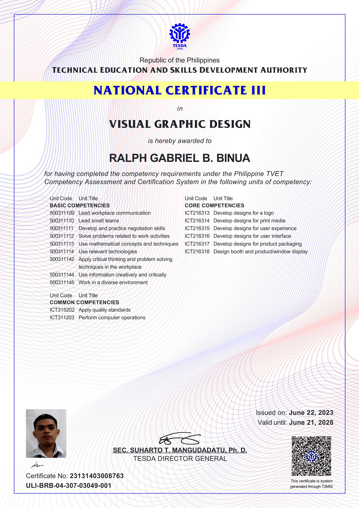

Aspiring Full-Stack Developer
I'm currently learning the MERN stack while continuously improving my skills in web development, backend systems, and UI/UX. I enjoy building functional and visually appealing applications.
A simple bus reservation project for ITEL1 using PHP and PHP Admin.
View ProjectA project system for UNLAD Trading Center created using NetBeans and PHP Admin.
View ProjectA backend project for ITEL3 using MongoDB, Express, and Node.js.
View ProjectA full-stack project using MongoDB, Express, React, and Node.js.
View ProjectMy Certificates
Computer Systems Servicing
Visual Graphic Design
You can place personal notes, study logs, or development journal entries here.
August 8, 2025. We met our IAS professor, Prof. AJ Tapican. He introduced the CIA Triad, a basic model used in information security to protect important information. • Confidentiality - Information must be accessed only by authorized people. • Integrity - Information must stay accurate and trustworthy. • Availability - Information must remain usable even during failures.
August 29, 2025. We learned about cybersecurity. There are two main teams: • Red Team - Offensive security that simulates cyberattacks. • Blue Team - Defensive security that monitors and protects systems. We also learned about penetration testing, which is used to confirm if a vulnerability is real by trying to exploit it.
September 12, 2025. We studied encryption fundamentals. Cryptography has four main principles: 1. Encryption (symmetric and asymmetric) 2. Authentication 3. Integrity 4. Non-repudiation We also learned that hash functions produce a unique value for each piece of data.
September 19, 2025. We studied OS Command Injection, an attack where attackers try to execute system commands on a victim’s operating system.
September 19, 2025. We learned about cloud models: • Public Cloud - Example: Google Drive, widely used and affordable. • Private Cloud - Example: AWS GovCloud, used by one organization. • Hybrid Cloud - Combination of private and public cloud. • Community Cloud - Shared by organizations with similar needs. We also learned about CASB (Cloud Access Security Brokers), which help monitor cloud usage. Examples: Forcepoint, BlueCoat, Skyhigh Security, CloudLock.
October 3, 2025. We learned how to use Burp Suite, a platform for web security testing used by professionals and bug hunters. Its main tools are Proxy, Repeater, Intruder, Scanner, and Sequencer.
SQL Injection happens when software creates SQL queries using unsafe user input. This can lead to data breaches, data loss, denial of service, or full system compromise.
The OSI Model has 7 layers:
The process of network traffic analysis includes: 1. Ingest Traffic - Capture the network traffic. 2. Reduce Noise - Filter unnecessary data. 3. Analyze and Explore - Study only important information. 4. Detect and Alert - Identify errors and decide if traffic is safe or harmful.
Prof. Tipay introduced the MERN tech stack and taught us how APIs work in the backend. After learning the basics, I watched YouTube tutorials and created small MERN projects. I now use MERN in our major subject projects to improve my skills.